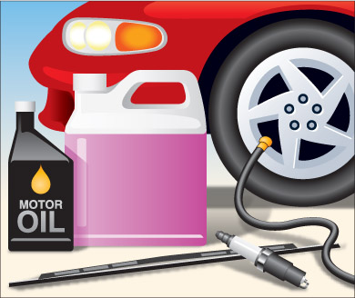
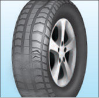

अपने वाहन का रखरखाव करना
खतरनाक हालत में वाहन चलाना गैरकानूनी है। लेकिन आर्थिक दृष्टि से भी वाहन का रखरखाव करना समझदारी भरा कदम है: इससे बेहतर माइलेज मिलता है और बेचने पर अच्छी कीमत मिलती है। वाहन का रखरखाव पर्यावरण संरक्षण में भी सहायक होता है।
पुलिस अधिकारी या परिवहन मंत्रालय का निरीक्षक किसी भी समय आपके वाहन, उसके उपकरण और उससे जुड़े किसी भी ट्रेलर की जांच कर सकता है। यदि वाहन असुरक्षित पाया जाता है, तो समस्या ठीक होने तक उसे सड़क से हटाया जा सकता है।
वाहन चलाते समय निम्नलिखित आदतों का पालन करने और नियमित रखरखाव से आपका वाहन स्वस्थ और सुरक्षित रहेगा।
चालक की आदतें

आरेख 5-1
वाहन चलाते समय आपको कुछ बातों का ध्यान रखना चाहिए। यदि आपको कोई समस्या या कमी नज़र आती है, तो किसी योग्य मैकेनिक से जांच और मरम्मत सहित आगे की जांच या कार्रवाई पर विचार किया जाना चाहिए। वाहन के मालिक के मैनुअल में अक्सर वाहन की जांच करते समय किन बातों पर ध्यान देना चाहिए और छोटी-मोटी समस्याओं को कैसे ठीक करना चाहिए, इसकी विस्तृत जानकारी दी गई होती है।
अपनी गाड़ी के पास पहुँचते समय निम्नलिखित संकेतों पर ध्यान दें:
- ताजा क्षति
- नीचे से तरल पदार्थ रिस रहा है
- कम हवा वाले या पंचर टायर
- दरवाजे, हुड, ट्रंक और ईंधन का दरवाजा/ढक्कन थोड़ा खुला हुआ है।
- असुरक्षित भार
- बर्फ, हिम या गंदगी की जांच करें जो वाहन की रोशनी, स्टीयरिंग, चालक की दृश्यता में बाधा डाल सकती है या वाहन से गिरने पर अन्य वाहन चालकों के लिए खतरा बन सकती है।
ड्राइवर की सीट से और गाड़ी चलाने से पहले, निम्नलिखित बातों पर ध्यान दें:
- पूरे वाहन के चारों ओर अबाधित दृश्यता
- जली हुई या धुंधली हेडलाइट्स
- इंजन स्टार्ट होने के दौरान डैशबोर्ड पर चेतावनी लाइटें जलती हैं, फिर बुझ जाती हैं।
- वाहन में ढीली वस्तुएं
गाड़ी चलाते समय निम्नलिखित बातों के प्रति सतर्क रहें:
- इंजन या एग्जॉस्ट से असामान्य आवाजें आना
- ब्रेक लगाते समय चरमराहट या घिसने जैसी आवाजें आना
- डैशबोर्ड पर चेतावनी लाइटें जल रही हैं
लंबी यात्रा की योजना बनाते समय, अधिक विस्तृत जाँच करें, जिनमें निम्नलिखित शामिल हैं:
- विंडशील्ड वाइपर और वॉशर-फ्लूइड का स्तर
- टायरों का दबाव, स्थिति और घिसाव
- सभी लाइटें काम करती हैं
- इंजन ठंडा होने पर उसके अंदर तेल और कूलेंट का स्तर, बेल्ट और होज़ में स्पष्ट खराबी और संभावित रिसाव की जांच करें। क्या-क्या देखना है, इसकी अधिक जानकारी के लिए वाहन के मालिक का मैनुअल देखें।
- किसी योग्य मैकेनिक से अपने वाहन की पूरी तरह से जांच करवाएं।
नियमित रखरखाव
वाहन को सुचारू रूप से चलाने के लिए, वाहन निर्माता अक्सर नियमित रखरखाव का कार्यक्रम निर्धारित करते हैं। इस कार्य का निर्धारण आमतौर पर वाहन द्वारा तय की गई कुल दूरी या समय अंतराल (जो भी पहले हो) के आधार पर किया जाता है। अधिक जानकारी वाहन के मालिक के मैनुअल में मिल सकती है। नियमित रखरखाव में तेल और फिल्टर बदलना, अन्य तरल पदार्थों की जांच और परिवर्तन, एयर और फ्यूल फिल्टर बदलना, टायरों को घुमाना और ब्रेक की जांच शामिल हो सकती है। समय-समय पर, इंजन एडजस्टमेंट और टाइमिंग बेल्ट बदलने जैसी अधिक गहन यांत्रिक सर्विसिंग की आवश्यकता हो सकती है।
शीतकालीन रखरखाव
अच्छी तरह से रखरखाव किया गया वाहन आमतौर पर सभी मौसम स्थितियों में स्टार्ट हो जाता है।
आपातकालीन आपूर्ति साथ रखें। इनमें निम्नलिखित शामिल होने चाहिए:
- एक फावड़ा
- बूस्टर केबल
- आपातकालीन फ्लेयर्स या चेतावनी लाइटें
- एक कंबल
- खींचने के लिए एक चेन।
सर्दियों में हमेशा अतिरिक्त विंडशील्ड वॉशर फ्लूइड साथ रखें और जरूरत पड़ने पर कंटेनर को फिर से भर लें।
खराब एग्जॉस्ट सिस्टम सर्दियों में विशेष रूप से खतरनाक होते हैं, जब ड्राइवर अक्सर खिड़कियां और वेंट बंद करके गाड़ी चलाते हैं। अगर आपके एग्जॉस्ट से शोर या खड़खड़ाहट की आवाज आ रही है, तो उसकी जांच करवाएं।
टायर

आरेख 5-2
अच्छी ग्रिप, माइलेज और सुरक्षा के लिए टायरों का प्रकार और निर्माण विधि बहुत महत्वपूर्ण हैं। टायर खरीदते या बदलते समय इन बातों का ध्यान रखें और सलाह के लिए अपनी गाड़ी के मालिक का मैनुअल या टायर निर्माता की गाइड देखें।
टायरों को कनाडाई मोटर वाहन सुरक्षा अधिनियम में वर्णित मानकों को पूरा करना आवश्यक है। टायर समय के साथ खराब होते जाते हैं, भले ही वे उपयोग में न हों। पुराने टायरों की पकड़ कम हो जाती है, उनमें दरारें पड़ने की संभावना अधिक होती है और उपयोग के दौरान वे अचानक खराब हो सकते हैं। टायर 10 वर्ष से अधिक पुराने नहीं होने चाहिए।
- टायर तब बदलें जब उनका ट्रेड 1.5 मिलीमीटर से कम गहरा हो या ट्रेड-वियर इंडिकेटर सड़क को छूने लगे। 4,500 किलोग्राम से अधिक वजन वाले वाहनों के आगे के टायर तब बदलें जब उनका ट्रेड तीन मिलीमीटर से कम गहरा हो।
- ऐसे टायरों को बदल दें जिनमें उभार, सूजन, गांठें, खुले हुए कॉर्ड या ट्रेड हों और साइडवॉल में इतने गहरे कट हों कि कॉर्ड दिखाई देने लगें।
- किसी भी वाहन पर लगे टायर का आकार वाहन निर्माता द्वारा निर्धारित न्यूनतम आकार से छोटा नहीं होना चाहिए। साथ ही, यह इतना बड़ा भी नहीं होना चाहिए कि वाहन को छू ले या उसके सुरक्षित संचालन को प्रभावित करे।
- आपको अपने वाहन के चारों पहियों पर एक जैसे टायर लगाने चाहिए।
- सर्दियों के मौसम में सर्वोत्तम ग्रिप प्रदान करने के लिए, यह सलाह दी जाती है कि आपके वाहन में एक ही ट्रेड पैटर्न वाले चार विंटर या ऑल-वेदर टायर लगे हों।
- यदि आप उत्तरी ओंटारियो में रहते हैं, तो आप कानूनी रूप से अपने वाहन पर स्टडेड टायर का उपयोग कर सकते हैं।
- खराब टायर पर्यावरण के लिए एक गंभीर समस्या हैं। उचित रखरखाव से टायर की उम्र बढ़ती है और उसे फेंकने में देरी होती है। टायर की लंबी उम्र के लिए कुछ सुझाव: सही हवा का दबाव बनाए रखें; टायरों की घिसावट की जांच करें; टायरों को नियमित रूप से घुमाएं और अच्छी ड्राइविंग आदतें अपनाएं।